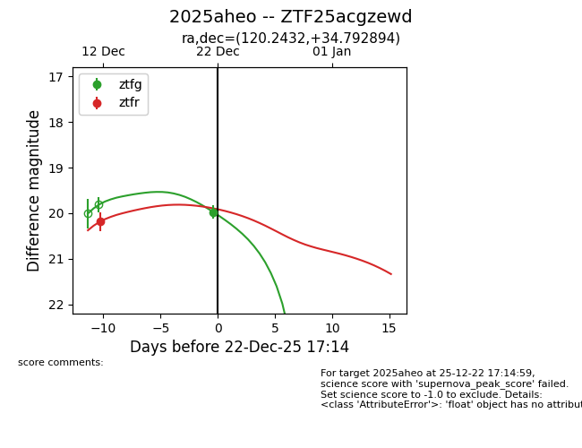
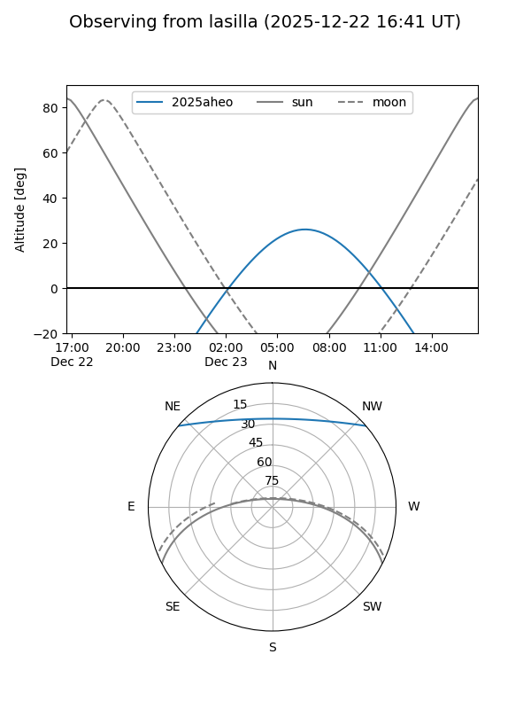
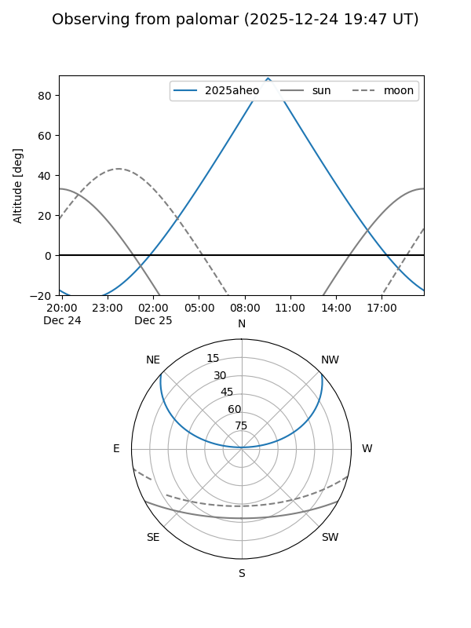
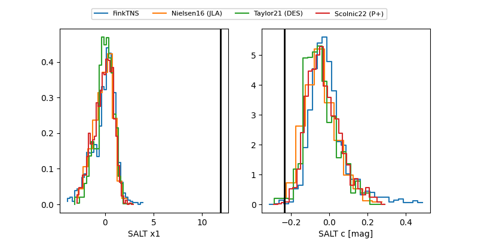

2025aheo
Target 2025aheo at 2025-12-24 16:17
Aliases and brokers:
FINK: fink-portal.org/ZTF25acgzewd
Lasair: lasair-ztf.lsst.ac.uk/objects/ZTF25acgzewd
ALeRCE: alerce.online/object/ZTF25acgzewd
TNS: wis-tns.org/object/2025aheo
YSE: ziggy.ucolick.org/yse/transient_detail/2025aheo
alt names
ZTF25acgzewd (ztf,fink_ztf)
2025aheo (tns,yse)
Coordinates:
equatorial (ra, dec) = 120.2432,+34.79289
equatorial (HMS+DMS) = 08:00:58.36,+34:47:34.42
galactic (l, b) = (186.1273,+28.59093)
Flags:
Photometry:
last ztfg=19.98, ztfr=19.89
1 ztfg, 2 ztfr detections
Lightcurve

Visibility


Additional plots
